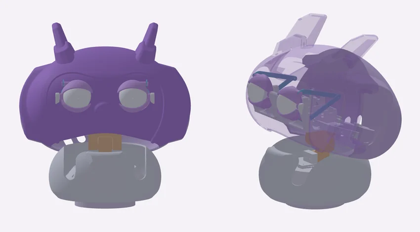
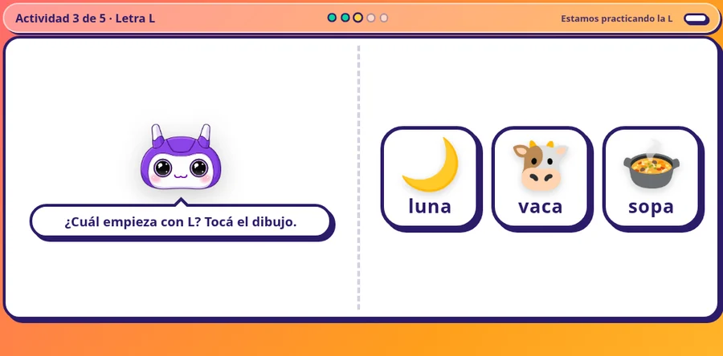
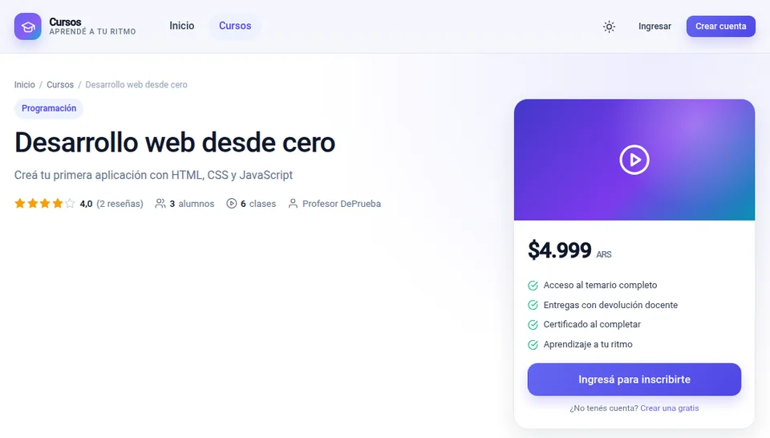
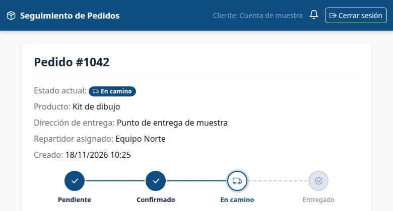
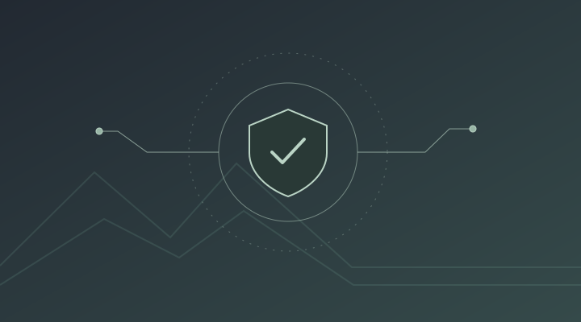

Robótica educativa
Robi
Un robot que acompaña los primeros pasos de la lectoescritura. Combina una interfaz de actividades con voz y un personaje que responde durante el ejercicio.


Robótica educativa
Un robot que acompaña los primeros pasos de la lectoescritura. Combina una interfaz de actividades con voz y un personaje que responde durante el ejercicio.



Educación · Laravel
Catálogo, inscripción y cursada en una misma aplicación. El recorrido del estudiante llega hasta la emisión del certificado.

Logística · PHP
El cliente consulta el estado de una entrega. El comercio y el repartidor actualizan el recorrido de cada pedido.

Gestión jurídica · PHP
Un panel para el trabajo diario de un estudio jurídico. Cada expediente reúne el seguimiento de la causa, sus documentos y sus plazos.

Domótica · Python
Alarma domiciliaria con panel web y aplicación Android. Un bot de Telegram envía avisos y permite consultar el estado del sistema.
Python · En reconstrucción
Agente personal de IA con interfaz web, voz y memoria persistente. Su reconstrucción avanza por fases.
Los fragmentos de SEREN que aparecen en el portfolio están escritos de antemano.